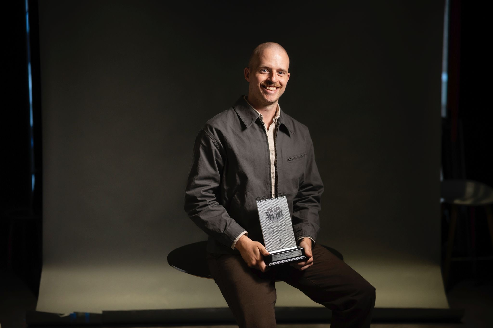

Hi, I'm Angus 👋, an award-winning health journalist based in London.
I write about changes in healthcare technology and systems, and how they affect those seeking care. My investigations have sparked inquiries and led to policy change.
I'm building a new website to host my work. In the meantime, you can view my clippings here and connect with me on LinkedIn.
You can also send me an email or reach me securely on Signal: @arthomson.01